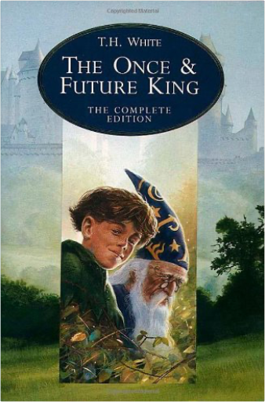

Charles Dickens' great depiction of Victorian London, revolving around the case of Jarndyce and Jarndyce and laced with secrets, horrific crimes and love affairs, comes to the BBC this Autumn in a major new drama.  The 'terrible mistake' was the contemporary utilitarian philosophy, expounded in Hard Times (1854) as the Philosophy of Fact by the hard-headed disciplinarian Thomas Gradgrind. But the novel, Dickens's shortest, is more than a polemical tract for the times; the tragic story of Louisa Gradgrind and her father is one of Dickens's triumphs. When Louisa, trapped in a loveless marriage, falls prey to an idle seducer, the crisis forces her father to reconsider his cherished system. Yet even as the development of the story reflects Dickens's growing pessimism about human nature and society, Hard Times marks his return to the theme which had made his early works so popular: the amusements of the people. Sleary's circus represents Dickens's most considered defence of the necessity of entertainment, and infuses the novel with the good humour which has ensured its appeal to generations of readers.  'Shoot all the Bluejays you want, if you can hit 'em, but remember it's a sin to kill a Mockingbird.' A lawyer's advice to his children as he defends the real mockingbird of Harper Lee's classic novel - a black man charged with the rape of a white girl. Through the young eyes of Scout and Jem Finch, Harper Lee explores with exuberant humour the irrationality of adult attitudes to race and class in the Deep South of the thirties. The conscience of a town steeped in prejudice, violence and hypocrisy is pricked by the stamina of one man's struggle for justice. But the weight of history will only tolerate so much...  A searing and magnificent picture of Australia at the moment of its foundation, with early settlers staking out their small patch of land and terrified by the harsh and alien continent. Focussing on the hostility between the early British inhabitants and the native Aboriginals. REMEMBERING BABYLON tells the tragic and compelling story of a boy who finds himself caught between the two worlds. Shot through with humour, and written with the poetic intensity that characterised Malouf's AN IMAGINARY LIFE this is the novel of epic scope yet it is simple, compassionate and universal: a classic.  In The Children of the New Forest, Marryat describes the trials and triumphs of the four Beverley children, orphaned during the English Civil War and forced to take refuge with a poor woodsman in the New Forest. This is the first annotated edition of a great children's classic, which has retained its popularity since 1847.  This is the extraordinary love story of Clare and Henry who met when Clare was six and Henry was thirty-six, and were married when Clare was twenty-two and Henry thirty. Impossible but true, because Henry suffers from a rare condition where his genetic clock periodically resets and he finds himself pulled suddenly into his past or future. In the face of this force they can neither prevent nor control, Henry and Clare's struggle to lead normal lives is both intensely moving and entirely unforgettable. |  Jonathan Swift's masterpiece is the finest satire in the English language. Shipwrecked traveler Lemuel Gulliver finds himself washed ashore in Lilliput, a kingdom populated by tiny people. Fascinated by their exotic visitor, the Lilliputians enlist Gulliver's services in their bitter civil war. But Gulliver becomes the object of a court intrigue and has to make a hasty escape. On his next voyage, his ship is blown off course to Brobdingnag, whose giant inhabitants strike him as horrific and occasionally revolting. A third journey takes him to Laputa, a floating island occupied by pedantic scientists and philosophers. Finally, he encounters a society of rational horses, the Houyhnhnms, and witnesses the appalling behaviour of their servants the Yahoos, a group who are in many ways disturbingly similar to Man at his most bestial. Swift's brilliantly original story is a timeless portrait of the human condition in all its misery and majesty.  The Hobbit is the unforgettable story of Bilbo, a peace-loving hobbit, who embarks on a strange and magical adventure. A timeless classic. Bilbo Baggins enjoys a quiet and contented life, with no desire to travel far from the comforts of home; then one day the wizard Gandalf and a band of dwarves arrive unexpectedly and enlist his services — as a burglar — on a dangerous expedition to raid the treasure-hoard of Smaug the dragon. Bilbo's life is never to be the same again. Seldom has any book been so widely read and loved as J.R.R. Tolkien's classic tale, 'The Hobbit'. Since its first publication in 1937 it has remained in print to delight each new generation of readers all over the world, and its hero, Bilbo Baggins, has taken his place among the ranks of the immortals of fiction.  The armies of the Dark Lord are massing as his evil shadow spreads ever wider. Men, dwarves, elves and ents unite forces to do battle against the Dark. Meanwhile, Frodo and Sam struggle further into Mordor in their heroic quest to destroy the One Ring.  In a sleepy village in the Shire, a young hobbit is entrusted with an immense task. He must make a perilous journey across Middle-earth to the Crack of Doom, there to destroy the Ruling Ring of Power - the only thing that prevents the Dark Lord's evil dominion.  The Company of the Ring is sundered. Frodo and Sam continue their journey alone down the great River Anduin - alone that is, save for a mysterious creeping figure that follows wherever they go...  The Once and Future King, Complete EditionT H White The extraordinary story of a boy called Wart — ignored by everyone except his tutor, Merlin — who goes on to become King Arthur. |

Doddridge Library
Collection Total:
417 Items
417 Items
Last Updated:
Apr 21, 2020
Apr 21, 2020

 Made with Delicious Library
Made with Delicious Library